積分技巧
📌 本章要解決的核心問題
在前兩章中，我們已經學會了基本的積分公式和代換法（u-substitution）。然而，現實世界中大量函數無法簡單地透過基本公式或代換法來積分——例如 $x e^x$、$\sqrt{a^2 - x^2}$、$\frac{1}{x^2-1}$ 等等。本章系統性地介紹七種進階積分技巧，從分部積分（integration by parts）出發，依序涵蓋三角函數積分、三角代換、部分分式分解、積分表與 CAS 工具、數值積分，最後討論瑕積分（improper integrals）——也就是涉及無窮區間或不連續點的積分。
🔑 關鍵概念（10 條）
- 分部積分公式：$\int u\,dv = uv - \int v\,du$——以一個積分換取另一個（希望更簡單的）積分
- LIATE 法則：選擇 $u$ 的優先順序——對數 → 反三角 → 代數 → 三角 → 指數
- 三角函數積分策略：奇次冪保留一個因式用於 $u$ 代換，偶次冪使用半角公式降冪
- 三角代換三種型式：$\sqrt{a^2-x^2}$ → $x=a\sin\theta$；$\sqrt{a^2+x^2}$ → $x=a\tan\theta$；$\sqrt{x^2-a^2}$ → $x=a\sec\theta$
- 部分分式分解：將複雜有理函數拆解為簡單分式之和，每一項都可以用對數或反正切積分
- 積分表與 CAS：查表或使用電腦代數系統可以快速解決大多數積分——但要會判讀結果
- 數值積分三法：中點法則、梯形法則、辛普森法則——當解析解不存在時的近似方法
- 誤差界限公式：給定 $n$ 與 $f''$ 或 $f^{(4)}$ 的最大值，可以保證近似值的精確度
- 瑕積分的定義：無窮區間或不連續點的積分必須透過極限來定義——收斂或發散
- 比較定理：當直接計算困難時，可以透過與已知積分比較來判斷斂散性
🧭 邏輯鏈
分部積分（乘積規則的逆運算）→ 三角函數積分（特殊型式的代換與恆等式）→ 三角代換（將根號轉換為三角函數）→ 部分分式（有理函數的系統性拆解）→ 積分表與 CAS（實用工具）→ 數值積分（當解析解不可得時）→ 瑕積分（將積分推廣到無窮與不連續點）
3.1 分部積分（Integration by Parts）
到目前為止，我們已經能夠處理許多基本積分。然而，像 $\int x e^x\,dx$ 這種看似簡單的積分卻無法直接用基本公式或 $u$ 代換解決。
📐 推導：從乘積規則到分部積分公式
已知微分的乘積規則：$\frac{d}{dx}[u(x)v(x)] = u'(x)v(x) + u(x)v'(x)$。對兩邊同時積分：
左邊化簡為 $u(x)v(x)$。令 $du = u'(x)dx$、$dv = v'(x)dx$，移項得：
這就是分部積分公式——它不直接計算原積分，而是以一個積分換取另一個積分，關鍵在於選擇恰當的 $u$ 和 $dv$。
分部積分的威力在於：我們可以將一個無法直接積分的乘積，轉換成一個更容易處理的形式。但這裡有一個關鍵問題：如何選擇 $u$ 和 $dv$？ 選錯了不但不會簡化，反而會讓積分變得更複雜。為此，數學家發展出 LIATE 記憶法則。
按優先級從高到低：Logarithmic（對數函數，如 $\ln x$）→ Inverse trigonometric（反三角函數，如 $\arctan x$）→ Algebraic（代數函數，如 $x^n$）→ Trigonometric（三角函數，如 $\sin x$）→ Exponential（指數函數，如 $e^x$）
為什麼是這個順序？因為我們需要 $dv$ 是可以積分的，而對數和反三角函數沒有簡單的積分公式，所以它們應該優先選為 $u$（要被微分的對象）。相較之下，指數和三角函數容易積分，所以適合放在 $dv$。
基本範例
考慮 $\int x e^x\,dx$。根據 LIATE：$x$ 是代數函數（A），$e^x$ 是指數函數（E），A 在 E 之前，所以選 $u = x$、$dv = e^x dx$。則 $du = dx$、$v = e^x$。
📝 範例 3.1：使用分部積分
求 $\int x e^x\,dx$。
解：令 $u = x$、$dv = e^x dx$，則 $du = dx$、$v = e^x$。代入公式：
驗算：微分 $\frac{d}{dx}[e^x(x-1)] = e^x(x-1) + e^x(1) = x e^x$ ✓
假如我們選擇 $u = e^x$、$dv = x\,dx$，則 $du = e^x dx$、$v = \frac{x^2}{2}$。代入公式得到 $\int x e^x dx = \frac{x^2}{2}e^x - \int \frac{x^2}{2}e^x dx$——新的積分比原來的更複雜！這說明了正確選擇 $u$ 和 $dv$ 的重要性。
需要重複使用分部積分
有時一次分部積分不足以解決問題。例如 $\int x^2 e^x\,dx$：第一次分部積分後，$x$ 的冪次從 2 降到 1；第二次分部積分後再降到 0，最終得到解答。這種逐次降低冪次的模式是分部積分的常見應用。
📝 範例 3.3：重複使用分部積分
求 $\int x^2 e^x\,dx$。
解：第一次：令 $u = x^2$、$dv = e^x dx$，則 $du = 2x\,dx$、$v = e^x$。
第二次：對 $\int x e^x\,dx$ 使用分部積分（如範例 3.1），得 $\int x e^x dx = e^x(x-1)$。代入：
循環型分部積分
某些積分經過兩次分部積分後，原積分會重新出現。例如 $\int e^x \sin x\,dx$ 和 $\int \sec^3 x\,dx$。這時我們不直接求值，而是將原積分設為 $I$，建立一個關於 $I$ 的方程式來求解。這是最優雅的分部積分應用之一。
📝 範例 3.5：循環型分部積分
求 $\int e^x \sin x\,dx$。
解：設 $I = \int e^x \sin x\,dx$。第一次分部積分：令 $u = \sin x$、$dv = e^x dx$，則 $du = \cos x\,dx$、$v = e^x$。
第二次分部積分（對 $\int e^x \cos x\,dx$）：令 $u = \cos x$、$dv = e^x dx$，則 $du = -\sin x\,dx$、$v = e^x$。
代回原式：$I = e^x \sin x - (e^x \cos x + I) = e^x \sin x - e^x \cos x - I$。因此 $2I = e^x(\sin x - \cos x)$，得：
定積分的分部積分
分部積分也可以用來建立降冪公式（reduction formulas）——將 $\int x^n e^x dx$ 或 $\int \sin^n x\,dx$ 等高次冪積分，轉換為較低次冪的積分。這在重複計算時特別有用。
📝 範例 3.6：求面積
求 $y = xe^{-x}$ 與 $x$ 軸之間、在 $[0,1]$ 上的面積。
解：面積 $= \int_0^1 xe^{-x}\,dx$。令 $u = x$、$dv = e^{-x}dx$，則 $du = dx$、$v = -e^{-x}$。
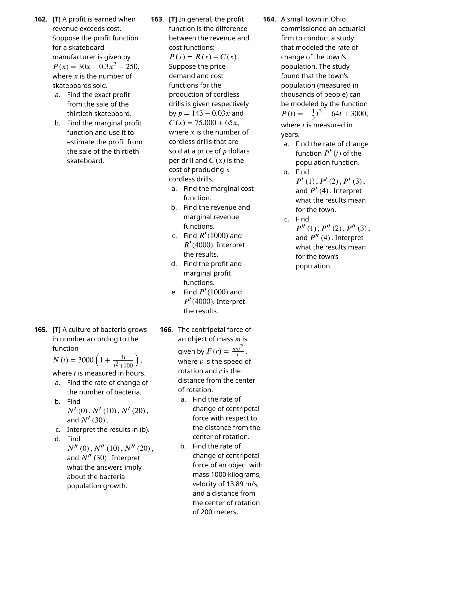
📝 範例
📝 練習：分部積分基本型使用分部積分求 $\int x \ln x\,dx$。
解：根據 LIATE，$\ln x$（對數）優先於 $x$（代數），所以選 $u = \ln x$、$dv = x\,dx$。則 $du = \frac{1}{x}dx$、$v = \frac{x^2}{2}$。代入：$\int x \ln x\,dx = \frac{x^2}{2}\ln x - \int \frac{x^2}{2}\cdot\frac{1}{x}dx = \frac{x^2}{2}\ln x - \frac{1}{2}\int x\,dx = \frac{x^2}{2}\ln x - \frac{x^2}{4} + C$。
3.2 三角函數積分（Trigonometric Integrals）
三角函數積分是處理 $\sin^m x \cos^n x$ 和 $\tan^m x \sec^n x$ 這類乘冪積分的系統性方法。
$\sin^m x \cos^n x$ 型的積分策略
對於 $\int \sin^m x \cos^n x\,dx$，基本策略是：利用三角恆等式 $\sin^2 x + \cos^2 x = 1$ 將積分化為可以用 $u$ 代換的形式。
情況 1：$m$ 為奇數——保留一個 $\sin x$，將其餘 $\sin^{m-1} x$ 用 $\cos^2 x = 1 - \sin^2 x$ 轉換為 $\cos x$ 的函數。令 $u = \cos x$、$du = -\sin x\,dx$。
情況 2：$n$ 為奇數——保留一個 $\cos x$，將其餘 $\cos^{n-1} x$ 用 $\sin^2 x = 1 - \cos^2 x$ 轉換為 $\sin x$ 的函數。令 $u = \sin x$、$du = \cos x\,dx$。
情況 3：$m$ 和 $n$ 皆為偶數——使用半角公式降冪：$\sin^2 x = \frac{1-\cos 2x}{2}$、$\cos^2 x = \frac{1+\cos 2x}{2}$，重複降冪直到可積。
📝 範例 3.8–3.9：奇次冪的積分
求 $\int \sin^3 x\,dx$。
解：$m=3$ 為奇數。$\sin^3 x = \sin^2 x \cdot \sin x = (1-\cos^2 x)\sin x$。令 $u = \cos x$、$du = -\sin x\,dx$：
📝 範例 3.10–3.12：偶次冪的積分
求 $\int \sin^2 x\,dx$。
解：$m=2$ 為偶數，使用半角公式：$\sin^2 x = \frac{1-\cos 2x}{2}$。
求 $\int \sin^2 x \cos^2 x\,dx$。
解：兩個都是偶數。$\sin^2 x \cos^2 x = \frac{1-\cos 2x}{2} \cdot \frac{1+\cos 2x}{2} = \frac{1-\cos^2 2x}{4} = \frac{1}{4}\sin^2 2x$。再用半角公式：$= \frac{1}{4}\cdot\frac{1-\cos 4x}{2} = \frac{1-\cos 4x}{8}$。積分得 $\frac{x}{8} - \frac{\sin 4x}{32} + C$。
當積分包含 $\sin(ax)\sin(bx)$、$\sin(ax)\cos(bx)$、$\cos(ax)\cos(bx)$ 時（$a \neq b$），使用積化和差公式： $$\sin A \sin B = \frac{1}{2}[\cos(A-B) - \cos(A+B)]$$ $$\sin A \cos B = \frac{1}{2}[\sin(A-B) + \sin(A+B)]$$ $$\cos A \cos B = \frac{1}{2}[\cos(A-B) + \cos(A+B)]$$ 這些公式將乘積轉換為和差，使得積分變得十分容易。
$\tan^m x \sec^n x$ 型的積分策略
處理含有 $\tan x$ 和 $\sec x$ 冪次的積分時，關鍵恆等式是 $\sec^2 x = 1 + \tan^2 x$。策略取決於 $m$（$\tan x$ 的冪次）和 $n$（$\sec x$ 的冪次）的奇偶性。
情況 1：$n$ 為偶數——保留 $\sec^2 x$，將其餘 $\sec^{n-2}x$ 轉換為 $\tan x$。令 $u = \tan x$、$du = \sec^2 x\,dx$。
情況 2：$m$ 為奇數——保留 $\sec x \tan x$，將其餘 $\tan^{m-1}x$ 轉換為 $\sec x$。令 $u = \sec x$、$du = \sec x \tan x\,dx$。
情況 3：$m$ 為偶數且 $n$ 為奇數——將所有 $\tan x$ 轉換為 $\sec x$，然後對 $\sec x$ 的奇次冪使用分部積分（或降冪公式）。
$\int \sec x\,dx = \ln|\sec x + \tan x| + C$，很多學生忘記是 $\sec x + \tan x$ 而非單獨的 $\sec x$。這個公式的推導需要一個巧妙的技巧：分子分母同乘 $(\sec x + \tan x)$，然後令 $u = \sec x + \tan x$。
📝 範例 3.18：$\int \sec^3 x\,dx$ 的循環型積分
求 $\int \sec^3 x\,dx$。
解：使用分部積分。令 $u = \sec x$、$dv = \sec^2 x\,dx$，則 $du = \sec x \tan x\,dx$、$v = \tan x$。
利用 $\tan^2 x = \sec^2 x - 1$：
移項：$2\int \sec^3 x\,dx = \sec x \tan x + \ln|\sec x + \tan x| + C$，最終：
降冪公式（Reduction Formulas）
📝 範例
📝 練習：$\tan^m x \sec^n x$ 型求 $\int \tan^3 x \sec^4 x\,dx$。
解：$m=3$（奇數）、$n=4$（偶數）。可用情況 1（$n$ 偶）：保留 $\sec^2 x$：$\tan^3 x \sec^4 x = \tan^3 x \sec^2 x \cdot \sec^2 x = \tan^3 x (\tan^2 x + 1) \sec^2 x$。令 $u = \tan x$、$du = \sec^2 x\,dx$：$\int u^3(u^2+1)du = \int (u^5+u^3)du = \frac{u^6}{6} + \frac{u^4}{4} + C = \frac{\tan^6 x}{6} + \frac{\tan^4 x}{4} + C$。
3.3 三角代換（Trigonometric Substitution）
三角代換是處理含有 $\sqrt{a^2 - x^2}$、$\sqrt{a^2 + x^2}$、$\sqrt{x^2 - a^2}$ 這類根號表達式積分的強大技術。
關鍵在於三個畢氏恆等式：$1 - \sin^2\theta = \cos^2\theta$、$1 + \tan^2\theta = \sec^2\theta$、$\sec^2\theta - 1 = \tan^2\theta$。只要將 $x$ 替換為適當的三角函數，根號內的表達式就會變成完全平方，根號隨即消失。
第一型：$\sqrt{a^2 - x^2}$
考慮積分 $\int \sqrt{a^2 - x^2}\,dx$。令 $x = a\sin\theta$，則 $dx = a\cos\theta\,d\theta$，且 $\sqrt{a^2 - x^2} = \sqrt{a^2 - a^2\sin^2\theta} = a\sqrt{1-\sin^2\theta} = a|\cos\theta|$。對於 $\theta \in [-\frac{\pi}{2}, \frac{\pi}{2}]$，$\cos\theta \geq 0$，因此根號化為 $a\cos\theta$。代換後的積分為 $\int a\cos\theta \cdot a\cos\theta\,d\theta = a^2\int \cos^2\theta\,d\theta$，這就可以用半角公式求解了。
| 根號型式 | 代換 | 微分 | 根號化簡 |
|---|---|---|---|
| $\sqrt{a^2 - x^2}$ | $x = a\sin\theta$ | $dx = a\cos\theta\,d\theta$ | $a\cos\theta$ |
| $\sqrt{a^2 + x^2}$ | $x = a\tan\theta$ | $dx = a\sec^2\theta\,d\theta$ | $a\sec\theta$ |
| $\sqrt{x^2 - a^2}$ | $x = a\sec\theta$ | $dx = a\sec\theta\tan\theta\,d\theta$ | $a\tan\theta$（$x>a$） |
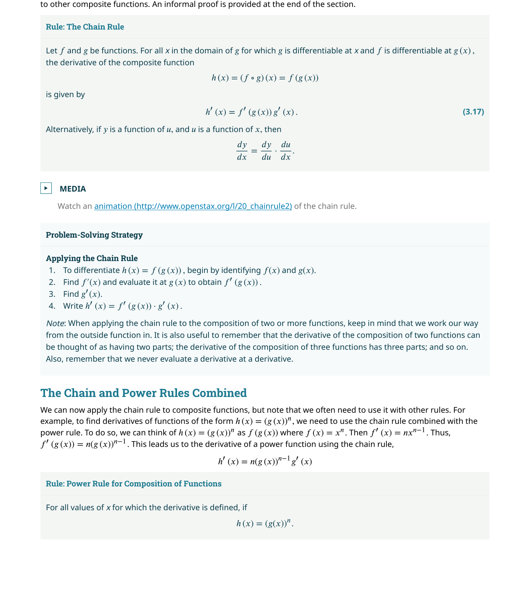
📐 完整推導：$\int \sqrt{a^2 - x^2}\,dx$
步驟 1：代換。令 $x = a\sin\theta$，則 $dx = a\cos\theta\,d\theta$。
步驟 2：使用半角公式。 $\cos^2\theta = \frac{1+\cos 2\theta}{2}$。
步驟 3：使用參考三角形轉換回 $x$。 $\sin\theta = \frac{x}{a}$，所以 $\theta = \arcsin\frac{x}{a}$。$\cos\theta = \frac{\sqrt{a^2-x^2}}{a}$。
📝 範例 3.21：第一型三角代換
求 $\int \frac{\sqrt{9-x^2}}{x^2}\,dx$。
解：令 $x = 3\sin\theta$，則 $dx = 3\cos\theta\,d\theta$、$\sqrt{9-x^2} = 3\cos\theta$。
從參考三角形（$\sin\theta = x/3$）：$\cot\theta = \frac{\sqrt{9-x^2}}{x}$、$\theta = \arcsin\frac{x}{3}$。因此：
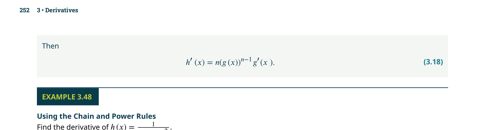
第二型：$\sqrt{a^2 + x^2}$
對於 $\sqrt{a^2 + x^2}$，令 $x = a\tan\theta$，則 $dx = a\sec^2\theta\,d\theta$，而 $\sqrt{a^2 + x^2} = \sqrt{a^2(1+\tan^2\theta)} = a\sec\theta$（對 $\theta \in (-\frac{\pi}{2}, \frac{\pi}{2})$，$\sec\theta > 0$）。
📐 完整推導：$\int \frac{dx}{\sqrt{a^2 + x^2}}$
令 $x = a\tan\theta$，則 $dx = a\sec^2\theta\,d\theta$、$\sqrt{a^2+x^2} = a\sec\theta$。
從參考三角形（$\tan\theta = x/a$）：$\sec\theta = \frac{\sqrt{a^2+x^2}}{a}$。因此：
注意常數 $-\ln|a|$ 被吸收進 $C'$ 中。這個公式非常重要——$\int \frac{dx}{\sqrt{a^2+x^2}} = \ln|\sqrt{a^2+x^2} + x| + C$。
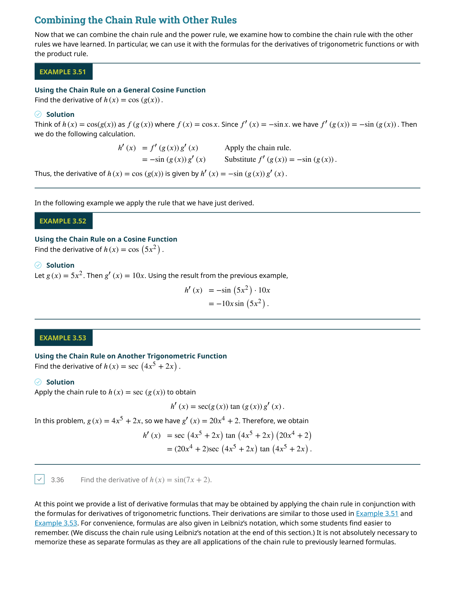
在三角代換中，根號化簡為 $\sqrt{a^2\cos^2\theta} = a|\cos\theta|$。我們通常限制 $\theta$ 的範圍使得三角函數為正，從而可以省略絕對值。例如在第一型代換中，限制 $\theta \in [-\frac{\pi}{2}, \frac{\pi}{2}]$ 確保 $\cos\theta \geq 0$。但若不定積分的結果需要涵蓋整個定義域，就必須小心處理絕對值。考試中常見的失分點就是忽略這個細節。
第三型：$\sqrt{x^2 - a^2}$
對於 $\sqrt{x^2 - a^2}$（$x > a$），令 $x = a\sec\theta$，則 $dx = a\sec\theta\tan\theta\,d\theta$，而 $\sqrt{x^2 - a^2} = \sqrt{a^2(\sec^2\theta-1)} = a|\tan\theta|$。對於 $x > a$（即 $\theta \in [0, \frac{\pi}{2})$），$\tan\theta \geq 0$，根號化為 $a\tan\theta$。
📝 範例 3.24：第三型三角代換
求 $\int \frac{\sqrt{x^2-4}}{x}\,dx$，$x > 2$。
解：令 $x = 2\sec\theta$，則 $dx = 2\sec\theta\tan\theta\,d\theta$、$\sqrt{x^2-4} = 2\tan\theta$。
從參考三角形（$\sec\theta = x/2$）：$\tan\theta = \frac{\sqrt{x^2-4}}{2}$、$\theta = \text{arcsec}\frac{x}{2}$。最終：
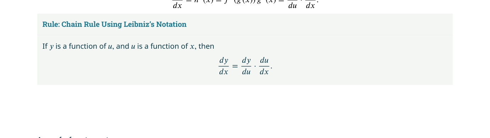
📝 範例
📝 練習：選擇適當的代換求 $\int \frac{dx}{(x^2+1)^{3/2}}$。
解：這是 $\sqrt{x^2+1}$ 型（第二型）。令 $x = \tan\theta$、$dx = \sec^2\theta\,d\theta$。$(x^2+1)^{3/2} = (\sec^2\theta)^{3/2} = \sec^3\theta$。積分變為 $\int \frac{\sec^2\theta}{\sec^3\theta}d\theta = \int \cos\theta\,d\theta = \sin\theta + C$。由 $\tan\theta = x$，畫參考三角形得 $\sin\theta = \frac{x}{\sqrt{x^2+1}}$。答案：$\frac{x}{\sqrt{x^2+1}} + C$。
3.4 部分分式（Partial Fractions）
部分分式分解是處理有理函數積分的系統性方法。
任何有理函數都可以分解為「部分分式」之和。例如 $\frac{1}{x^2-1} = \frac{1/2}{x-1} - \frac{1/2}{x+1}$。左邊看起來難以積分，但右邊的每一項都是 $\int \frac{A}{x-a}dx = A\ln|x-a| + C$ 的形式，十分簡單。
基本步驟
步驟 1：若 $\deg(P) \geq \deg(Q)$，先進行多項式長除法，將 $\frac{P(x)}{Q(x)}$ 寫成 $S(x) + \frac{R(x)}{Q(x)}$，其中 $\deg(R) < \deg(Q)$。
步驟 2：將 $Q(x)$ 分解為線性因式和不可約二次因式的乘積。
步驟 3：根據 $Q(x)$ 的因式類型設定分解形式，解出待定係數。
步驟 4：逐項積分。
| 分母因式類型 | 分解形式 |
|---|---|
| 不重複線性因式 $(x-a)$ | $\frac{A}{x-a}$ |
| 重複線性因式 $(x-a)^n$ | $\frac{A_1}{x-a} + \frac{A_2}{(x-a)^2} + \cdots + \frac{A_n}{(x-a)^n}$ |
| 不重複不可約二次因式 $(x^2+bx+c)$ | $\frac{Ax+B}{x^2+bx+c}$ |
| 重複不可約二次因式 $(x^2+bx+c)^n$ | $\frac{A_1x+B_1}{x^2+bx+c} + \cdots + \frac{A_nx+B_n}{(x^2+bx+c)^n}$ |
部分分式分解只能在 $\deg(P) < \deg(Q)$ 時進行。如果分子的次數大於或等於分母，必須先做長除法。跳過這一步直接設定分解形式會得到錯誤結果——這是考試中最常見的陷阱之一。
不重複線性因式
當分母可以分解為互不相同的線性因式乘積時（如 $Q(x) = (x-a)(x-b)(x-c)$），分解形式為 $\frac{A}{x-a} + \frac{B}{x-b} + \frac{C}{x-c}$。求解待定係數有兩種方法：係數比較法和策略性代入法。
📝 範例 3.29：不重複線性因式
求 $\int \frac{3x+2}{x^3 - x^2 - 2x}\,dx$。
解：分母分解：$x^3-x^2-2x = x(x-2)(x+1)$。設 $\frac{3x+2}{x(x-2)(x+1)} = \frac{A}{x} + \frac{B}{x-2} + \frac{C}{x+1}$。通分後比較分子：$3x+2 = A(x-2)(x+1) + Bx(x+1) + Cx(x-2)$。
策略性代入：$x=0$ → $2 = A(-2)(1)$ → $A = -1$；$x=2$ → $8 = B(2)(3)$ → $B = 4/3$；$x=-1$ → $-1 = C(-1)(-3)$ → $C = -1/3$。
重複線性因式
當分母包含 $(x-a)^n$ 時，分解必須包含所有從 1 次到 $n$ 次的項：$\frac{A_1}{x-a} + \frac{A_2}{(x-a)^2} + \cdots + \frac{A_n}{(x-a)^n}$。這確保了每一項對應的積分公式（$\int \frac{dx}{(x-a)^k} = \frac{(x-a)^{-k+1}}{-k+1} + C$，$k \neq 1$）都能被使用。
📝 範例 3.32：重複線性因式
求 $\int \frac{x-2}{(x+1)^2(x-1)}\,dx$。
解：分解形式：$\frac{x-2}{(x+1)^2(x-1)} = \frac{A}{x+1} + \frac{B}{(x+1)^2} + \frac{C}{x-1}$。通分比較係數得 $A = \frac{3}{4}, B = \frac{3}{2}, C = -\frac{1}{4}$。積分：
不可約二次因式
對於不可約二次因式 $ax^2+bx+c$（判別式 $b^2-4ac < 0$），分解形式為 $\frac{Ax+B}{ax^2+bx+c}$。積分時通常需要配方法（completing the square）將其轉換為 $\int \frac{du}{u^2+p^2}$ 或 $\int \frac{u\,du}{u^2+p^2}$ 的形式，前者用到反正切，後者用到對數。
📝 範例 3.33–3.34：不可約二次因式
求 $\int \frac{2x-3}{x^3+x}\,dx$。
解：$x^3+x = x(x^2+1)$，其中 $x^2+1$ 是不可約二次因式。設 $\frac{2x-3}{x(x^2+1)} = \frac{A}{x} + \frac{Bx+C}{x^2+1}$。解得 $A = -3, B = 3, C = 2$。積分：
📝 範例
📝 練習：部分分式分解求 $\int \frac{x+1}{x^2-4}\,dx$。
解：$x^2-4 = (x-2)(x+2)$。設 $\frac{x+1}{(x-2)(x+2)} = \frac{A}{x-2} + \frac{B}{x+2}$。$x+1 = A(x+2) + B(x-2)$。代入 $x=2$：$3 = 4A$ → $A = 3/4$。代入 $x=-2$：$-1 = -4B$ → $B = 1/4$。積分得 $\frac{3}{4}\ln|x-2| + \frac{1}{4}\ln|x+2| + C$。
3.5 其他積分策略（Other Strategies for Integration）
除了前面四節介紹的系統性技巧外，實務上還有兩種重要的輔助工具：積分表（integration tables）和電腦代數系統（computer algebra systems, CAS）。
積分表的使用
積分表是收錄了大量積分公式的參考資料。使用積分表的關鍵技巧是：將給定的積分透過代數操作（配方法、變數變換、分子分母同乘某個因式）轉換為表中某個公式的標準形式。例如，$\int \frac{dx}{\sqrt{4x^2+9}}$ 可以透過提出 $\sqrt{4}$ 來匹配 $\int \frac{dx}{\sqrt{x^2+a^2}}$ 的公式。
1. 先判斷積分屬於哪一種「類型」（根號型、有理函數型、三角函數型等）
2. 透過配方法將二次式整理成標準形式（例如 $ax^2+bx+c \to a(x-h)^2+k$）
3. 若找不到完全匹配的公式，嘗試 $u$ 代換或提出常數因式來調整
4. 使用積分表後，務必微分驗算
電腦代數系統（CAS）
現代數學軟體（如 Wolfram Alpha、Mathematica、Maple、SymPy）可以在幾秒內求出大多數積分的解析解。但使用 CAS 時需要注意兩點：
第一，CAS 的輸出可能與手算結果「看起來」完全不同。例如 $\int \frac{dx}{\sqrt{x^2+1}}$，手算可能得到 $\ln|\sqrt{x^2+1} + x| + C$，而 CAS 可能輸出 $\text{arcsinh}\,x + C$。這兩個答案實際上是等價的（因為 $\text{arcsinh}\,x = \ln(x + \sqrt{x^2+1})$）。
第二，CAS 有時會使用你不熟悉的特殊函數來表達積分結果。例如某些積分可能以橢圓積分（elliptic integrals）或超幾何函數（hypergeometric functions）表示，這些對初學者來說可能難以解讀。在這種情況下，可以考慮使用數值積分（第 3.6 節）來獲得近似值。
📝 範例 3.36：使用積分表
求 $\int \frac{dx}{x\sqrt{4x+9}}$。
解：查積分表公式 $\int \frac{dx}{x\sqrt{ax+b}} = \frac{2}{\sqrt{-b}}\arctan\sqrt{\frac{ax+b}{-b}} + C$（當 $b < 0$ 時）。這裡 $a=4, b=9$，$b$ 為正，所以使用另一個公式。查表得：$\int \frac{dx}{x\sqrt{ax+b}} = \frac{1}{\sqrt{b}}\ln\left|\frac{\sqrt{ax+b}-\sqrt{b}}{\sqrt{ax+b}+\sqrt{b}}\right| + C$（$b > 0$）。代入得 $\frac{1}{3}\ln\left|\frac{\sqrt{4x+9}-3}{\sqrt{4x+9}+3}\right| + C$。
積分的反導數（antiderivative）不唯一——任何兩個正確的反導數之間只相差一個常數。因此，如果你的答案和解答本或 CAS 的答案看起來不同，不要急著認定自己錯了。驗證方法：將兩個答案相減，如果差是一個常數（或化簡後是常數），則兩者都對。例如 $\int \sin x \cos x\,dx$，用 $u=\sin x$ 得到 $\frac{1}{2}\sin^2 x + C$，用 $u=\cos x$ 得到 $-\frac{1}{2}\cos^2 x + C$。兩者差 $\frac{1}{2}$，都是正確的。
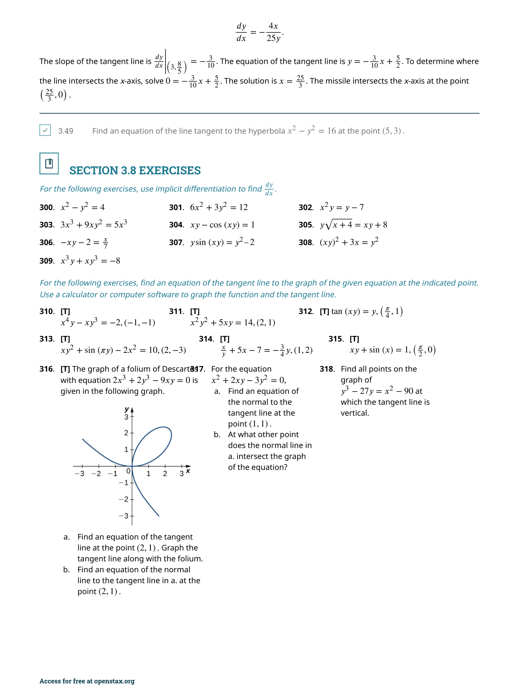
📝 範例
📝 練習：使用積分表使用積分表求 $\int x^2 \sqrt{x^2-4}\,dx$。
解：查積分表可得公式 $\int x^2\sqrt{x^2-a^2}\,dx = \frac{x}{8}(2x^2-a^2)\sqrt{x^2-a^2} - \frac{a^4}{8}\ln|x+\sqrt{x^2-a^2}| + C$。這裡 $a=2$。代入得 $\frac{x}{8}(2x^2-4)\sqrt{x^2-4} - 2\ln|x+\sqrt{x^2-4}| + C$。
3.6 數值積分（Numerical Integration）
並非所有函數都有初等函數形式的反導數。
即使我們知道微積分基本定理——$\int_a^b f(x)dx = F(b)-F(a)$——但如果 $f(x)$ 的反導數 $F(x)$ 無法用已知函數表達，這個定理就無法直接使用。數值積分繞過了尋找反導數的需求，直接從 $f(x)$ 的函數值來估計積分值。
中點法則（Midpoint Rule）
中點法則是最直觀的數值積分方法：將區間 $[a, b]$ 分割為 $n$ 個等寬子區間，每個子區間用一個矩形來近似——矩形的高度取在子區間的中點處的函數值。

梯形法則（Trapezoidal Rule）
梯形法則用梯形（而非矩形）來近似每個子區間上的面積。與中點法則不同，梯形法則使用子區間端點處的函數值。

梯形法則有一個重要特性：對於凹口向上（concave up）的函數，梯形法則會高估積分值；對於凹口向下（concave down）的函數，梯形法則會低估積分值。而中點法則的偏差方向剛好相反。因此，兩者的平均值通常比單一方法更準確——這正是辛普森法則的基礎。
辛普森法則（Simpson's Rule）
辛普森法則將中點法則和梯形法則的優點結合起來：它用二次函數（拋物線）來近似每兩個相鄰子區間上的函數。這使得辛普森法則的精確度遠高於前兩種方法。
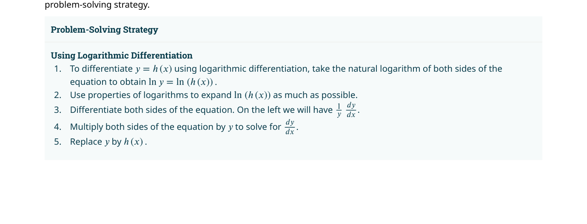
誤差界限
使用數值積分時，我們需要知道近似值的可靠性。以下定理給出了三種方法的誤差上界。
中點法則誤差：$|E_M| \leq \frac{M_2(b-a)^3}{24n^2}$，其中 $M_2 = \max_{[a,b]} |f''(x)|$
梯形法則誤差：$|E_T| \leq \frac{M_2(b-a)^3}{12n^2}$，其中 $M_2 = \max_{[a,b]} |f''(x)|$
辛普森法則誤差：$|E_S| \leq \frac{M_4(b-a)^5}{180n^4}$，其中 $M_4 = \max_{[a,b]} |f^{(4)}(x)|$
📝 範例 3.39–3.41：使用數值積分法
用中點法則和梯形法則（$n=4$）估計 $\int_0^1 x^2\,dx$，並比較精確值。
解：精確值為 $\frac{1}{3} \approx 0.333333$。
中點法則：$\Delta x = 0.25$，中點為 $0.125, 0.375, 0.625, 0.875$。$M_4 = 0.25[(0.125)^2 + (0.375)^2 + (0.625)^2 + (0.875)^2] = 0.25[0.015625 + 0.140625 + 0.390625 + 0.765625] = 0.328125$。
梯形法則：$T_4 = \frac{0.25}{2}[0^2 + 2(0.25^2+0.5^2+0.75^2) + 1^2] = 0.125[0 + 2(0.0625+0.25+0.5625) + 1] = 0.125[2.75+1] = 0.34375$。
中點法則低估 $0.005$，梯形法則高估 $0.010$——與理論一致（$f(x)=x^2$ 凹口向上，梯形法則高估）。
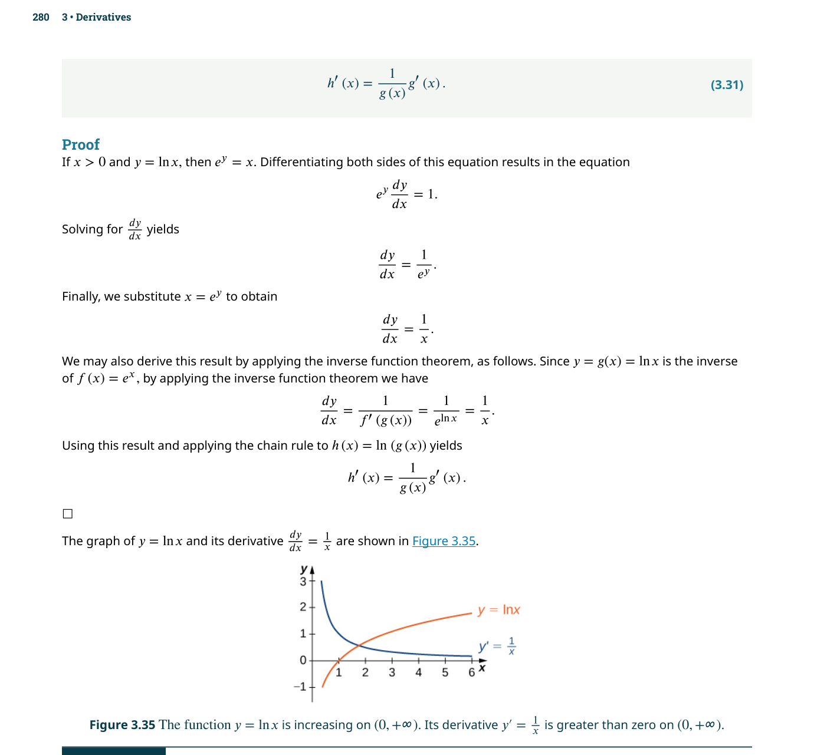
📝 範例
📝 練習：決定所需的 $n$若要使用梯形法則估計 $\int_0^1 e^{-x^2}\,dx$ 且誤差不超過 $0.0001$，至少需要多少子區間？
解：$f(x)=e^{-x^2}$，$f''(x) = 2e^{-x^2}(2x^2-1)$。在 $[0,1]$ 上，$|f''(x)|$ 的最大值約為 $2$。代入梯形誤差公式：$\frac{2(1-0)^3}{12n^2} \leq 0.0001$ → $\frac{2}{12n^2} \leq 10^{-4}$ → $n^2 \geq \frac{2}{12 \times 10^{-4}} \approx 1666.7$ → $n \geq 41$。因此至少需要 41 個子區間。
3.7 瑕積分（Improper Integrals）
截至目前，我們處理的定積分都有兩個基本前提：
一個經典例子：$\int_1^\infty \frac{1}{x}\,dx$ 和 $\int_1^\infty \frac{1}{x^2}\,dx$。兩個積分的被積函數看起來相似，但前者發散（面積無限大），後者收斂到 1。這個差異對於理解機率分布、物理中的「加百列號角」（Gabriel's Horn）等概念至關重要。
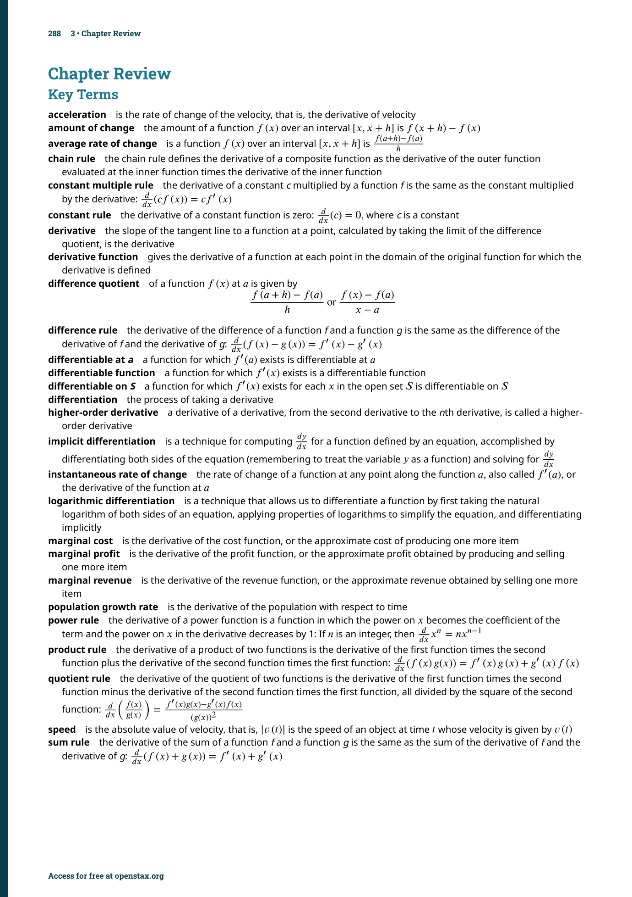
第一類瑕積分：無窮區間
無窮上限：$\int_a^\infty f(x)dx = \lim_{t \to \infty} \int_a^t f(x)dx$
無窮下限：$\int_{-\infty}^b f(x)dx = \lim_{t \to -\infty} \int_t^b f(x)dx$
雙邊無窮：$\int_{-\infty}^\infty f(x)dx = \int_{-\infty}^c f(x)dx + \int_c^\infty f(x)dx$（須兩部分都收斂）
📝 範例 3.47：判斷斂散性
判斷 $\int_1^\infty \frac{1}{x}\,dx$ 收斂還是發散。
解：
極限為無窮，積分發散。相比之下，$\int_1^\infty \frac{1}{x^2}dx = \lim_{t \to \infty} [-\frac{1}{x}]_1^t = \lim_{t \to \infty}(1 - \frac{1}{t}) = 1$，收斂。
一般規則：$\int_1^\infty \frac{1}{x^p}dx$ 在 $p > 1$ 時收斂，在 $p \leq 1$ 時發散。這是瑕積分最重要的基準測試之一。
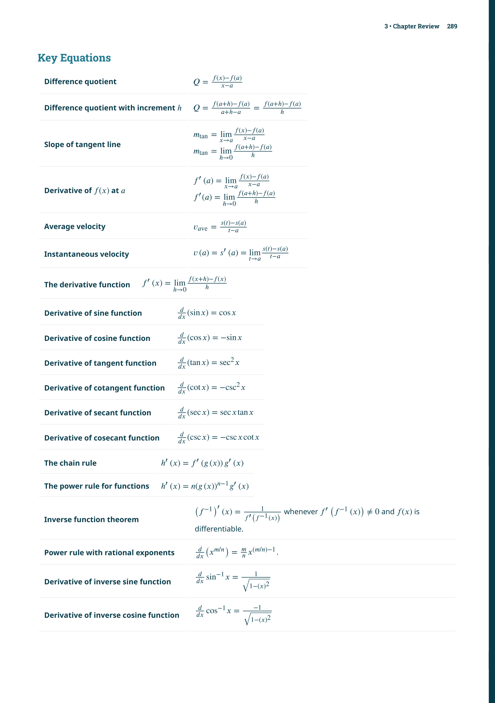
加百列號角（Gabriel's Horn）
這是一個令人驚嘆的數學現象：考慮 $y = 1/x$（$x \geq 1$）繞 $x$ 軸旋轉所生成的立體。其表面積為無窮大，但體積卻是有窮的！
📝 範例 3.48：加百列號角的體積
求 $y = 1/x$（$x \geq 1$）繞 $x$ 軸旋轉的體積。
解：使用圓盤法：
體積為 $\pi$——有限的！但表面積為無窮大。這意味著你可以用有限量的油漆「填滿」這個號角，但卻無法用有限量的油漆「塗滿」它的表面。
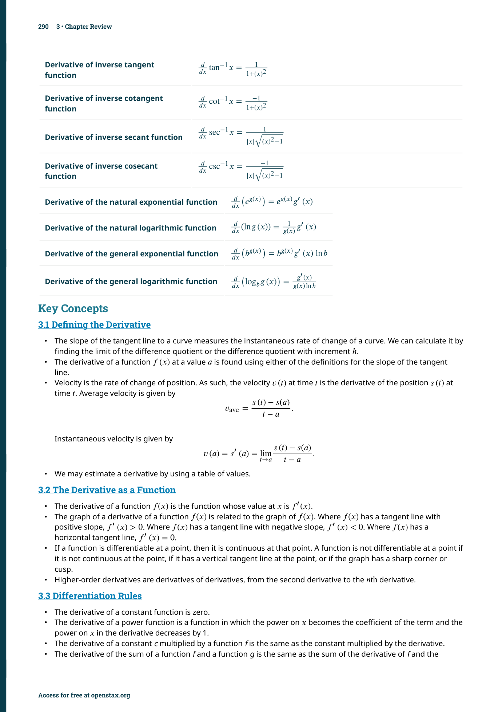
第二類瑕積分：不連續被積函數
當被積函數在積分區間內有無窮不連續點（vertical asymptote）時，也需要透過極限來定義積分。
右端點不連續：若 $f$ 在 $x=b$ 處有垂直漸近線，則 $\int_a^b f(x)dx = \lim_{t \to b^-} \int_a^t f(x)dx$
左端點不連續：若 $f$ 在 $x=a$ 處有垂直漸近線，則 $\int_a^b f(x)dx = \lim_{t \to a^+} \int_t^b f(x)dx$
內部點不連續：若 $f$ 在 $c \in (a,b)$ 處有垂直漸近線，則拆成兩部分分別取極限，兩部分都收斂才算收斂。
📝 範例 3.52–3.54：不連續被積函數
判斷 $\int_0^4 \frac{1}{\sqrt{x}}\,dx$ 收斂還是發散。
解：$f(x)=1/\sqrt{x}$ 在 $x=0$ 處不連續。使用瑕積分定義：
收斂到 4。
判斷 $\int_{-1}^1 \frac{1}{x^2}\,dx$ 收斂還是發散。
解：$f(x)=1/x^2$ 在 $x=0$ 處不連續。拆分為 $\int_{-1}^0 \frac{1}{x^2}dx + \int_0^1 \frac{1}{x^2}dx$。計算第二項：$\int_0^1 x^{-2}dx = \lim_{t \to 0^+}[-x^{-1}]_t^1 = \lim_{t \to 0^+}(-1 + \frac{1}{t}) = \infty$。發散！因此原積分發散。注意：千萬不要直接套用 $\int x^{-2}dx = -1/x$ 在 $[-1,1]$ 上——這樣會得到 $(-1/1)-(-1/(-1)) = -2$ 這個錯誤答案。
這是所有瑕積分錯誤中最常見的一種：$\int_{-1}^1 \frac{1}{x^2}dx$ 如果直接當作一般定積分計算會得到 $-2$，但正確答案應該是發散。原因是 $f(x)=1/x^2$ 在 $x=0$ 處有垂直漸近線，而 $x=0$ 正好在積分區間內部。遇到這種情況，必須將積分拆成兩部分，分別取極限——永遠不要越過不連續點積分。
比較定理（Comparison Theorem）
有時瑕積分難以直接計算。在這種情況下，我們可以使用比較定理來判斷其斂散性——將待判斷的積分與一個已知斂散性的積分進行比較。
若對所有 $x \geq a$ 有 $0 \leq f(x) \leq g(x)$，則：
(i) 若 $\int_a^\infty g(x)dx$ 收斂，則 $\int_a^\infty f(x)dx$ 也收斂。
(ii) 若 $\int_a^\infty f(x)dx$ 發散，則 $\int_a^\infty g(x)dx$ 也發散。
📝 範例
📝 練習：瑕積分判斷 $\int_1^\infty \frac{\sin^2 x}{x^2}\,dx$ 的斂散性。
解：由於 $0 \leq \frac{\sin^2 x}{x^2} \leq \frac{1}{x^2}$，而 $\int_1^\infty \frac{1}{x^2}dx$ 收斂（$p=2>1$）。根據比較定理，$\int_1^\infty \frac{\sin^2 x}{x^2}dx$ 也收斂。
📋 關鍵概念回顧（Key Concepts）
- 分部積分公式（Integration by Parts）：$\int u\,dv = uv - \int v\,du$，是乘積規則的逆運算，適用於兩個不同類型函數的乘積積分。
- LIATE 法則：選擇 $u$ 的優先順序——對數（Logarithmic）、反三角（Inverse trig）、代數（Algebraic）、三角（Trigonometric）、指數（Exponential）。排越前面的函數越優先選為 $u$。
- 三角函數積分策略：$\int \sin^m x \cos^n x\,dx$——奇次冪保留一個用於 $u$ 代換，偶次冪使用半角公式降次。$\int \tan^m x \sec^n x\,dx$ 依 $m$ 和 $n$ 的奇偶性選擇策略。
- 三角代換（Trigonometric Substitution）：將含 $\sqrt{a^2-x^2}$、$\sqrt{a^2+x^2}$、$\sqrt{x^2-a^2}$ 的積分透過 $x=a\sin\theta$、$x=a\tan\theta$、$x=a\sec\theta$ 代換為三角積分，最後用參考三角形轉換回 $x$。
- 部分分式分解（Partial Fractions）：將有理函數 $\frac{P(x)}{Q(x)}$ 分解為 $\frac{A}{x-a}$、$\frac{Bx+C}{x^2+bx+c}$ 等簡單分式之和，利用對數和反正切完成積分。
- 數值積分（Numerical Integration）：當無法求出封閉形式的反導數時，使用梯形法則（Trapezoidal Rule）或辛普森法則（Simpson's Rule）近似計算定積分。
- 瑕積分（Improper Integrals）：積分區間無界或被積函數在區間內有不連續點的情況。透過取極限定義收斂或發散。
- 比較定理（Comparison Theorem）：對於非負函數的瑕積分，若 $0 \le f(x) \le g(x)$ 且 $\int g(x)dx$ 收斂，則 $\int f(x)dx$ 也收斂；反之若 $\int f(x)dx$ 發散，則 $\int g(x)dx$ 也發散。
- 積分表與 CAS：實務上常使用積分表或電腦代數系統求積分，需能判斷不同形式的答案是否等價。
- $p$-積分判別法：$\int_1^\infty \frac{1}{x^p}dx$ 在 $p>1$ 時收斂，$p \le 1$ 時發散。這是瑕積分比較的基準。
- 加百列號角（Gabriel's Horn）：$y=1/x$ 繞 $x$ 軸旋轉的體積有限（$\pi$），但表面積無限——經典的有限體積、無限表面積悖論。
📐 關鍵公式（Key Equations）
| 公式 | 說明 |
|---|---|
| $$\int u\,dv = uv - \int v\,du$$ | 分部積分公式 |
| $$\int \sin^n x\,dx = -\frac{1}{n}\sin^{n-1}x\cos x + \frac{n-1}{n}\int \sin^{n-2}x\,dx$$ | $\sin^n x$ 的降次遞推公式 |
| $$\int \cos^n x\,dx = \frac{1}{n}\cos^{n-1}x\sin x + \frac{n-1}{n}\int \cos^{n-2}x\,dx$$ | $\cos^n x$ 的降次遞推公式 |
| $$\sin^2 x = \frac{1-\cos 2x}{2},\quad \cos^2 x = \frac{1+\cos 2x}{2}$$ | 半角公式（用於偶次冪降次） |
| $$\sqrt{a^2-x^2} \;\to\; x = a\sin\theta,\; dx = a\cos\theta\,d\theta$$ | 三角代換第一型 |
| $$\sqrt{a^2+x^2} \;\to\; x = a\tan\theta,\; dx = a\sec^2\theta\,d\theta$$ | 三角代換第二型 |
| $$\sqrt{x^2-a^2} \;\to\; x = a\sec\theta,\; dx = a\sec\theta\tan\theta\,d\theta$$ | 三角代換第三型 |
| $$\int \sec x\,dx = \ln|\sec x + \tan x| + C$$ | $\sec x$ 的積分 |
| $$\frac{P(x)}{Q(x)} = \sum \frac{A_i}{(x-a)^i} + \sum \frac{B_j x + C_j}{(x^2+bx+c)^j}$$ | 部分分式分解的一般形式 |
| $$T_n = \frac{\Delta x}{2}\bigl[f(x_0)+2f(x_1)+\cdots+2f(x_{n-1})+f(x_n)\bigr]$$ | 梯形法則（$n$ 個子區間） |
| $$S_n = \frac{\Delta x}{3}\bigl[f(x_0)+4f(x_1)+2f(x_2)+\cdots+4f(x_{n-1})+f(x_n)\bigr]$$ | 辛普森法則（$n$ 為偶數） |
| $$|E_T| \le \frac{K(b-a)^3}{12n^2},\quad K = \max|f''(x)|$$ | 梯形法則誤差界限 |
| $$|E_S| \le \frac{K(b-a)^5}{180n^4},\quad K = \max|f^{(4)}(x)|$$ | 辛普森法則誤差界限 |
| $$\int_a^\infty f(x)\,dx = \lim_{t\to\infty}\int_a^t f(x)\,dx$$ | 第一類瑕積分（無窮上限） |
| $$\int_1^\infty \frac{1}{x^p}\,dx \quad \begin{cases} \text{收斂}, & p>1 \\ \text{發散}, & p \le 1 \end{cases}$$ | $p$-積分判別法 |
| $$\Gamma(n) = \int_0^\infty x^{n-1}e^{-x}\,dx,\quad \Gamma(n+1)=n!$$ | Gamma 函數（階乘的連續推廣） |
本章摘要
本章建立了微積分中最完整的積分工具箱。以下是十個最重要的觀念：
- 分部積分 $\int u\,dv = uv - \int v\,du$——處理兩個函數乘積積分的首選武器，LIATE 法則指導 $u$ 的選擇
- 三角函數積分——$\sin^m x \cos^n x$ 型：奇次冪保留一個用於 $u$ 代換，偶次冪使用半角公式；$\tan^m x \sec^n x$ 型依奇偶性選擇策略
- 三角代換三型——$\sqrt{a^2-x^2} \to x=a\sin\theta$、$\sqrt{a^2+x^2} \to x=a\tan\theta$、$\sqrt{x^2-a^2} \to x=a\sec\theta$，代換後用參考三角形轉換回 $x$
- 部分分式分解——將有理函數拆解為 $\frac{A}{x-a} + \frac{Bx+C}{x^2+bx+c}$ 等形式，利用對數和反正切積分
- 積分表與 CAS——實務上不可或缺的工具，但要會判斷不同形式的答案是否等價
- 中點法則——$M_n = \Delta x \sum f(\bar{x}_i)$，誤差 $\propto 1/n^2$
- 梯形法則——$T_n = \frac{\Delta x}{2}(f_0 + 2f_1 + \cdots + 2f_{n-1} + f_n)$，誤差 $\propto 1/n^2$
- 辛普森法則——$S_n = \frac{\Delta x}{3}(f_0 + 4f_1 + 2f_2 + \cdots + 4f_{n-1} + f_n)$，誤差 $\propto 1/n^4$，精度最高
- 瑕積分 = 極限定義——$\int_a^\infty f(x)dx = \lim_{t\to\infty} \int_a^t f(x)dx$，收斂若極限為有限值
- $\int_1^\infty \frac{1}{x^p}dx$ 基準——$p>1$ 收斂，$p \leq 1$ 發散；比較定理擴展了斂散性判斷能力
| 技巧 | 適用情境 | 核心公式 / 法則 |
|---|---|---|
| 分部積分 | 兩個函數乘積的積分 | $\int u\,dv = uv - \int v\,du$，LIATE 法則 |
| 三角函數積分 | $\sin^m x\cos^n x$、$\tan^m x\sec^n x$ | 奇次冪 → $u$ 代換；偶次冪 → 半角公式 |
| 三角代換 | $\sqrt{a^2\pm x^2}$、$\sqrt{x^2-a^2}$ | $x=a\sin\theta$ / $a\tan\theta$ / $a\sec\theta$ |
| 部分分式 | 有理函數 $\frac{P(x)}{Q(x)}$ | 依因式類型設定分解形式，解待定係數 |
| 積分表 / CAS | 各類積分（快速求解） | 匹配標準形式或使用軟體 |
| 中點法則 | 無解析解的定積分 | $M_n = \Delta x \sum f(\frac{x_{i-1}+x_i}{2})$ |
| 梯形法則 | 無解析解的定積分 | $T_n = \frac{\Delta x}{2}[f_0 + 2\sum f_i + f_n]$ |
| 辛普森法則 | 需要高精確度的數值積分 | $S_n$ 係數模式 1-4-2-4-2-...-4-1 |
| 瑕積分 | 無窮區間或不連續被積函數 | 透過極限定義，使用 $p$-測試和比較定理判斷斂散 |
⚠️ 初學者常見錯誤
選錯 $u$ 和 $dv$ 是最常見的分部積分錯誤。例如 $\int x e^x dx$ 如果選 $u=e^x$、$dv=x\,dx$，會得到比原積分更複雜的 $\int \frac{x^2}{2}e^x dx$。解決方法：永遠遵循 LIATE 法則——對數和反三角函數優先選為 $u$，指數和三角函數優先選為 $dv$。如果第一組選擇不奏效，嘗試交換。
$\int \ln x\,dx$ 看起來只有一個函數，似乎不適用分部積分。但實際上可以寫成 $\int 1 \cdot \ln x\,dx$，令 $u=\ln x$、$dv=dx$。許多學生在考試中遇到 $\int \ln x\,dx$ 或 $\int \arctan x\,dx$ 會卡住，就是因為沒想到這個「$dv=dx$」的技巧。
三角代換的最後一步——也是最容易被跳過的一步——是將答案從 $\theta$ 轉換回 $x$。許多學生在積分完三角函數後就直接宣告完成，忘記需要畫參考三角形並用 $x$ 表達 $\sin\theta$、$\cos\theta$、$\tan\theta$ 等。這是扣分的常見原因。
$\int \frac{x^3}{x^2-1}dx$ 中，分子的次數（3）大於分母的次數（2），必須先做長除法得到 $x + \frac{x}{x^2-1}$，再對 $\frac{x}{x^2-1}$ 做部分分式分解。直接設 $\frac{x^3}{x^2-1} = \frac{A}{x-1} + \frac{B}{x+1}$ 是錯誤的——分解形式必須對應於化簡後的真分式。
這是最危險的錯誤，因為你可能會算出一個看似合理的數字，但實際上是錯的。$\int_{-1}^2 \frac{1}{x}dx$ 不能直接寫成 $[\ln|x|]_{-1}^2$，因為 $x=0$ 在區間內部而 $\ln|x|$ 在 $x=0$ 處無定義。必須拆成 $\int_{-1}^0 + \int_0^2$ 分別取極限——而 $\int_{-1}^0 \frac{1}{x}dx$ 發散，所以原積分發散。
這兩個積分的被積函數看起來只差一個指數，但斂散性完全不同。$\int_1^\infty \frac{1}{x^p}dx$ 的基準是 $p=1$：$p>1$ 收斂，$p \leq 1$ 發散。這個規則必須牢記，因為它在比較定理中是最常使用的參考積分。
✅ 自我檢測（Self-Check）
完成以下題目檢驗你對本章核心概念的掌握程度。點擊展開查看答案。
題 1：分部積分 — 使用 LIATE 法則求 $\int x \ln x\,dx$
答案：根據 LIATE，$\ln x$（對數）優先於 $x$（代數），選 $u = \ln x$、$dv = x\,dx$。則 $du = \frac{1}{x}dx$、$v = \frac{x^2}{2}$。
$\int x \ln x\,dx = \frac{x^2}{2}\ln x - \int \frac{x^2}{2} \cdot \frac{1}{x}\,dx = \frac{x^2}{2}\ln x - \frac{1}{2}\int x\,dx = \frac{x^2}{2}\ln x - \frac{x^2}{4} + C$。
題 2：三角代換 — 求 $\displaystyle\int \frac{dx}{\sqrt{9-x^2}}$
答案：這是第一型 $\sqrt{a^2-x^2}$（$a=3$）。令 $x = 3\sin\theta$，$dx = 3\cos\theta\,d\theta$，$\sqrt{9-x^2} = 3\cos\theta$。
$\displaystyle\int \frac{3\cos\theta}{3\cos\theta}\,d\theta = \int d\theta = \theta + C = \arcsin\frac{x}{3} + C$。
題 3：部分分式 — 求 $\displaystyle\int \frac{dx}{x^2-1}$
答案：分解 $\frac{1}{x^2-1} = \frac{1}{(x-1)(x+1)} = \frac{1/2}{x-1} - \frac{1/2}{x+1}$。
$\displaystyle\int \frac{dx}{x^2-1} = \frac{1}{2}\ln|x-1| - \frac{1}{2}\ln|x+1| + C = \frac{1}{2}\ln\left|\frac{x-1}{x+1}
ight| + C$。
題 4：瑕積分斂散判斷 — $\displaystyle\int_1^\infty \frac{dx}{x^2}$ 收斂還是發散？
答案：$\displaystyle\int_1^\infty \frac{dx}{x^2} = \lim_{b\to\infty} \int_1^b x^{-2}\,dx = \lim_{b\to\infty} \left[-\frac{1}{x}
ight]_1^b = \lim_{b\to\infty} \left(1 - \frac{1}{b}
ight) = 1$。
積分收斂，值為 $1$。這符合 $p$-測試：$\int_1^\infty \frac{dx}{x^p}$ 當 $p>1$ 收斂，此處 $p=2>1$。
題 5：分部積分循環型 — 求 $\displaystyle\int e^x \sin x\,dx$ 的策略
答案：設 $I = \int e^x \sin x\,dx$。第一次分部積分：$u = \sin x, dv = e^x dx$ → $I = e^x\sin x - \int e^x\cos x\,dx$。
第二次分部積分：$u = \cos x, dv = e^x dx$ → $\int e^x\cos x\,dx = e^x\cos x + I$。
代入：$I = e^x\sin x - e^x\cos x - I$ → $2I = e^x(\sin x - \cos x)$ → $I = \frac{e^x}{2}(\sin x - \cos x) + C$。
📚 延伸資源
- Khan Academy — Integration Techniques：涵蓋分部積分、三角代換、部分分式的互動練習和影片教學
- Paul's Online Math Notes — Calculus II：詳細的積分技巧筆記，包含大量例題和常見錯誤分析
- 3Blue1Brown — Integration and the fundamental theorem：YouTube 系列，提供積分技巧的視覺直覺
- Wolfram Alpha：強大的線上 CAS，可以驗算你的積分答案
- Desmos Graphing Calculator：可視化數值積分（中點、梯形、辛普森）的收斂過程
- 下一章預告：第 4 章 — 微分方程將大量使用本章學到的所有積分技巧來求解微分方程
- Gabriel's Horn 互動展示：在線上探索這個令人驚嘆的「有限體積、無限表面積」的數學奇觀